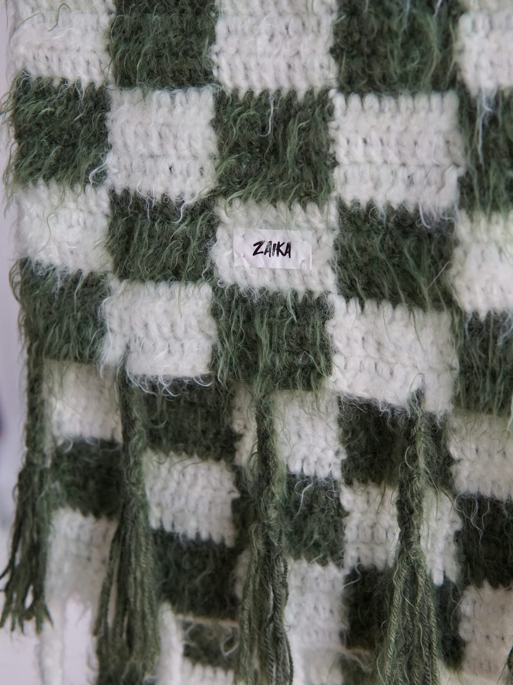

The label
Zaika is Zlata — one maker, no production line. She works in yarns chosen for one thing: how the finished surface behaves. A halo that moves when you do. A pile deep enough to put your face in. A stitch that holds its own shape instead of lying flat.
Nothing repeats. There is no pattern to run again, so when a piece finds its person, that listing closes for good. If it's still on Etsy, it's available. If it's gone, the next piece will be something else.
She makes these because making them is what she wants to do with her life. That part isn't a strategy.